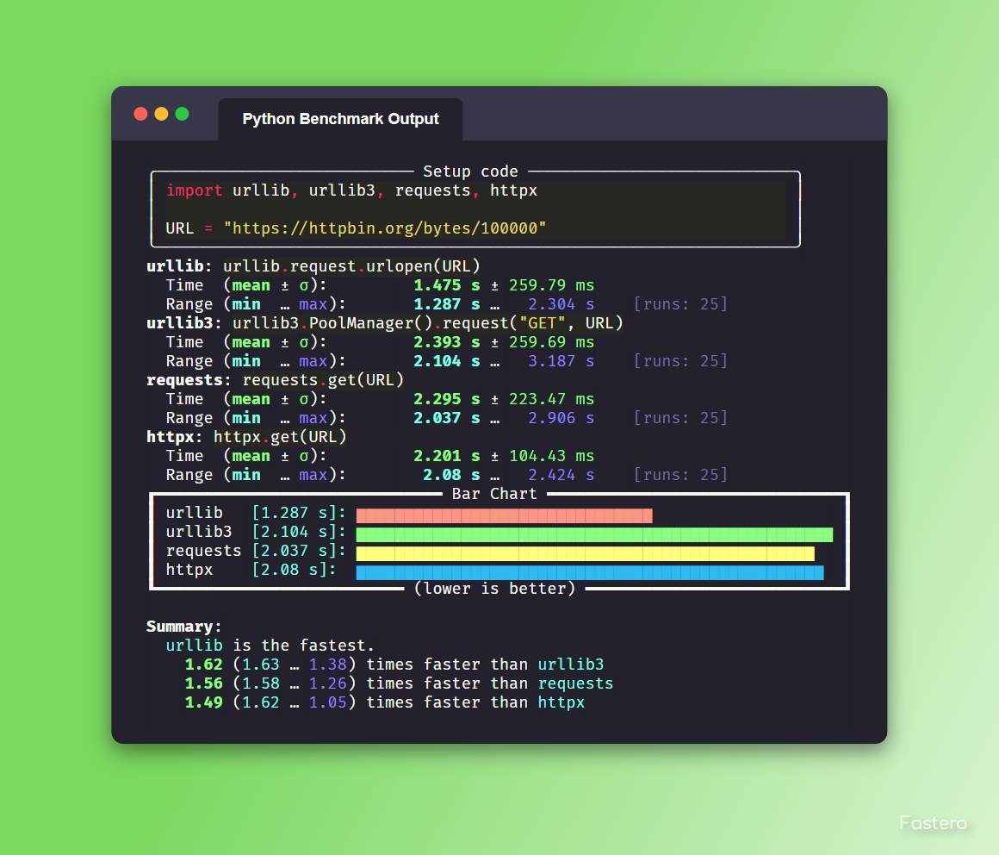

CLI Reference#
This is a hand-written version of the CLI Reference. It may be outdated, if it is please kindly remind me to update it in a github issue or open a pull request. In the case of it being out of date (not having some option or argument), You may want to check out the Automated CLI Reference.
This does not cover exporting, those are covered in their own page Exporting Reference and the parameters are covered in CLI Reference (Automated)
Also, this version is very long and filled with examples. :)
fastero#
fastero [CODE_SNIPPETS...] [OPTIONS]
Arguments#
These are the positional arguments, opposed to options, these don’t require any prefix and are directly passed
- CODE_SNIPPETS#
The snippets to benchmark. There may be multiple
Example
fastero "str(1)" "f'{1}'"
Output
If the image below looks blurry then click it to open it in fullscreen

Any of these can be
-, to get the input later. Useful for multi-line inputsExample
fastero - -
You can also use
file:to read output from a file. If your code starts withfile:, you can escape this behavior by adding 2 spaces after the:, e.g.file: fooExample
fastero "file: foo.py" "file: bar.py"
Output
If the image below looks blurry then click it to open it in fullscreen

The filename for
file:can also bestdinto accept output piped from another programExample
echo "str(1)" | fastero "file: stdin"
All of these can also be used together.
Example
fastero "str(1)" "file: bar.py" -
This would mean the first argument is
str(1), the second argument is the contents of bar.py, the third argument is the one given later
{kind=link}
Options#
- -v, --version#
Output the version of fastero that is currently being used
- -h, --help#
Show the help message
- -n, --snippet-name <NAME>#
Assign a name to a snippet.
Example
fastero "f'{1}'" -n "f-string"
This argument can be used multiple times
Example
fastero "f'{1}'" "'{}'.format(1)" -n "f-string" -n "str.format()"
Output
If the image below looks blurry then click it to open it in fullscreen

{kind=link}
- -s, --setup <STMT>#
Provide some code to use as the initial setup for the benchmark snippets. This can be used to initialize classes, set variables, import libraries etc.
Default
The default value for setup is
pass. This is done to be consistent with timeitThe format is the exact same as the
CODE_SNIPPETSargument. Meaning it supports thefile:directive to get from an file or stdin and the"-"parameter to enter multiline input in a promptExample
fastero --setup "l = [0]" "a, = l" "a = l[0]"
Output
If the image below looks blurry then click it to open it in fullscreen

- -f, --from-json <FILE>#
Get input from a json file.
Format
If you only want to get parameters, the format should be this:
{ "setup": "l = [0]", "results": [ { "snippet_name": "unpacking", "snippet_code": "a, = l" }, { "snippet_name": "indexing", "snippet_code": "a = l[0]" } ] }
The keys
snippet_nameandsetupare optional!If you however, want to get other information like the mean and standard deviation, you have to use a json file specifically generated by fastero, or one that uses the same format as fastero,
See also
--export-json, --jsonExample
Assuming the contents of foo.json are as above:
fastero --from-json foo.json
Then the output will be the one showed at the end of the
--setupsectionYou can do a whole bunch of stuff by using this flag. For example if you want to re-preview the results from a json file, you can run
fastero --from-json foo.json --only-export
Yes I know, this option name is bit unintuitive, since this doesn’t have any export parameters, but when I named this option, I thought about what if people want to only export the data from the json file, I am open to renaming suggestions though
If you want to export the results in one of the export formats, then you can add those export options alongside the
--from-jsonand--only-export, e.g.fastero --from-json foo.json --only-export --export-image
So now, it will get the run results from the
foo.jsonfile and then export a png file with those results
- -j, --json#
Only print json results. This is simillar to the
--export-jsonoption but instead of exporting to a file, this outputs the json results to standard output. This is given only for scripting purposes. A better reasoning is given in Command Line Interface GuidelinesExample
fastero "f'{1}'" "'{}'.format(1)" -n "f-string" -n "str.format()" --json
Output
{ "setup": "pass", "results": [ { "snippet_code": "f'{1}'", "snippet_name": "f-string", "runs": 55000000, "mean": 5.442414363636363e-08, "median": 5.392934e-08, "min": 5.3144839999999946e-08, "max": 6.013294000000001e-08, "stddev": 1.926783849689808e-09 }, { "snippet_code": "'{}'.format(1)", "snippet_name": "str.format()", "runs": 18000000, "mean": 1.652621666666668e-07, "median": 1.649461000000003e-07, "min": 1.6389370000000002e-07, "max": 1.6862390000000005e-07, "stddev": 1.424589255715445e-09 } ] }
- -q, --quiet#
If used, there will be no output printed.
This is useful if you are running it from a script and don’t want the output polluting your terminal
- -e, --only-export#
If used alongside –from-json, skips the benchmarking part and just exports the data. The json file needs to to contain the exported data or else this won’t work.
- -w, --warmup <NUM>#
Perform NUM warmup runs before the actual benchmark. Perform this only for presistent improvements. Otherwise all performance gains are lost on each batch
Example
fastero "f'{1}'" "'{}'.format(1)" -n "f-string" -n "str.format()" --warmup 100_000 Tip: The _ is used in replacement of a comma, you can omit it.
This is due to how fastero benchmarking works. It relies on timeit and timeit doesn’t have a warmup parameter, so I’m thinking about subclassing
timeit.Timerand implementing a warmup parameter myself.
- -c, --code-theme <THEME_NAME>#
Theme for code input and output, also applicable if “-” is used for any of the parameters,
Default
The default theme is one-dark
For a list of the themes see https://pygments.org/styles
Tip
Best Themes
These are the best themes: (in my opinion of course)
one-dark
from typing import Iterator # This is an example class Math: @staticmethod def fib(n: int) -> Iterator[int]: """ Fibonacci series up to n """ a, b = 0, 1 while a < n: yield a a, b = b, a + b result = sum(Math.fib(42)) print("The answer is {}".format(result))
material
from typing import Iterator # This is an example class Math: @staticmethod def fib(n: int) -> Iterator[int]: """ Fibonacci series up to n """ a, b = 0, 1 while a < n: yield a a, b = b, a + b result = sum(Math.fib(42)) print("The answer is {}".format(result))
dracula
from typing import Iterator # This is an example class Math: @staticmethod def fib(n: int) -> Iterator[int]: """ Fibonacci series up to n """ a, b = 0, 1 while a < n: yield a a, b = b, a + b result = sum(Math.fib(42)) print("The answer is {}".format(result))
monokai
from typing import Iterator # This is an example class Math: @staticmethod def fib(n: int) -> Iterator[int]: """ Fibonacci series up to n """ a, b = 0, 1 while a < n: yield a a, b = b, a + b result = sum(Math.fib(42)) print("The answer is {}".format(result))
native
from typing import Iterator # This is an example class Math: @staticmethod def fib(n: int) -> Iterator[int]: """ Fibonacci series up to n """ a, b = 0, 1 while a < n: yield a a, b = b, a + b result = sum(Math.fib(42)) print("The answer is {}".format(result))
fruity
from typing import Iterator # This is an example class Math: @staticmethod def fib(n: int) -> Iterator[int]: """ Fibonacci series up to n """ a, b = 0, 1 while a < n: yield a a, b = b, a + b result = sum(Math.fib(42)) print("The answer is {}".format(result))
There are others such as
solarized-dark,gruvbox-darkand many more!Demonstation
This image is basically the console output with this theme, generated by fastero itself

This image is basically the console output with this theme, generated by fastero itself

This image is basically the console output with this theme, generated by fastero itself

This image is basically the console output with this theme, generated by fastero itself
This image is basically the console output with this theme, generated by fastero itself

This image is basically the console output with this theme, generated by fastero itself

Example
fastero "f'{1}'" "'{}'.format(1)" -n "f-string" -n "str.format()" --code-theme monokai
- -t, --total-time <TIME>#
How long to test each snippet for. Format: 500ms, 10s, 1m5s, 1.5m, 1h40m15s, etc.
Default
The default duration for benchmarking each code snippet is 3 seconds
The algorithm is simple, it gets the
--time-per-batchparameter (by default 200ms), figures out how many runs will be done within that time. Then calculates how many batches will be possible within this<TIME>, and that’s your run count, manually specifying --runs overrides this. To control the maximum and minimum you can use --max-runs and --min-runs respectively.See also
- -b, --time-per-batch <TIME>#
How long each test batch will last for, increase this to make the tests more accurate at the cost of making progress bar less smooth.
Default
The default duration for each batch is 200 milliseconds
Also change
--total-timeaccordingly or else statistics won’t work when it can only do a single batch, therefore it can’t determine the mean, median, standard deviation etc.See also
- -u, --time-unit <UNIT>#
Set the time unit to be used. Possible values: ns, us, ms, s, dynamic
Default
The default the time unit is dynamic meaning it depends on the time itself, it is generally the best possible unit for the time.
Applications
This applies to the the console output and the
asciidoc,markdown,html,svg,png, andplotexport optionsExample
fastero "f'{1}'" "'{}'.format(1)" -n "f-string" -n "str.format()" --time-unit ms
Available Values
ns (nanoseconds)
us (microseconds)
ms (milliseconds)
s (seconds)
dynamic (dynamic value)
{kind=link}
- -r, --runs <NUM>#
Perform exactly NUM runs for each snippet. By default, the number of runs is automatically determined
This is not guaranteed and there may be a maximum of 2 more runs if NUM isn’t divisible by 3
- -m, --min-runs <NUM>#
Perform at least NUM runs for each snippet
This exists to aid in controlling the algorithm mentioned in --total-time
- -m, --min-runs <NUM>#
Perform at most NUM runs for each snippet
This exists to aid in controlling the algorithm mentioned in --total-time
For information about the exporting options, see Exporting or if you only want to see the parameters see CLI Reference (Automated)